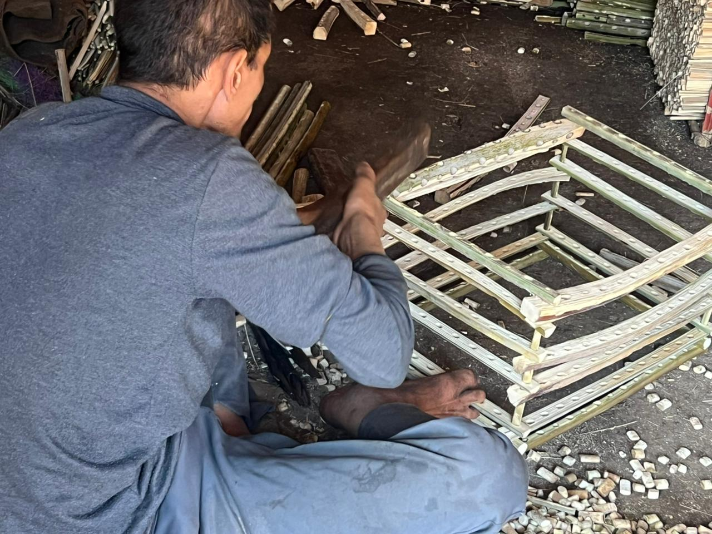
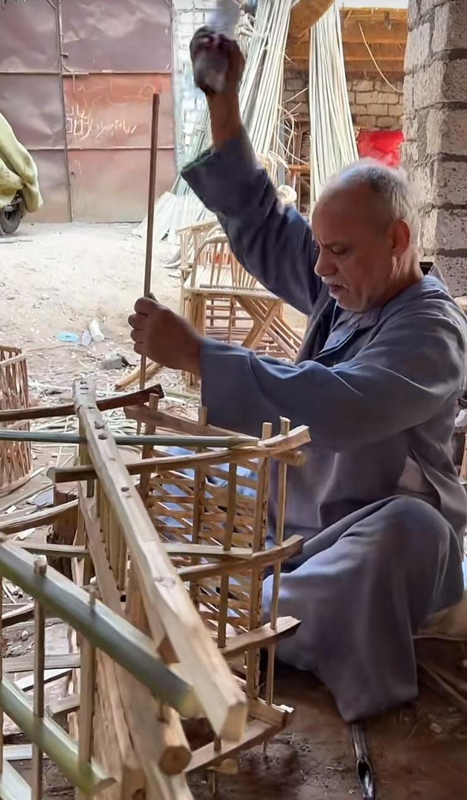
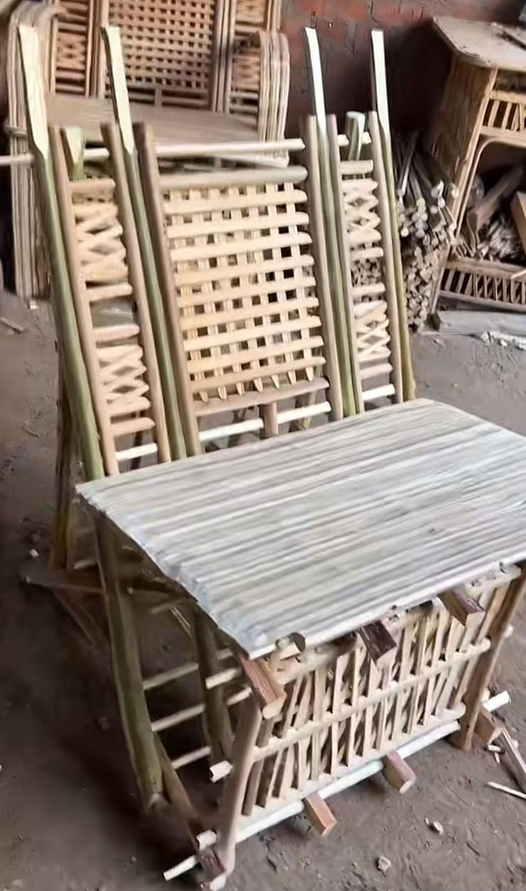

في قرية شبرا النملة التابعة لمركز طنطا بمحافظة الغربية، تواصل ورش صناعة الأقفاص والكراسي من الجريد عملها رغم التحديات المتزايدة التي تهدد استمراريتها، حيث تواجه هذه الحرفة التقليدية ضغوطًا متصاعدة نتيجة ارتفاع تكاليف الإنتاج وتراجع أعداد العمال، وذلك في وقت لا يزال فيه الطلب قائمًا على منتجاتها داخل الأسواق.
الورشة والإنتاج اليومي
وخلال جولة ميدانية داخل إحدى الورش، يدير "الحاج أحمد محمود محمد عبداللطيف، 60 عامًا"، من مركز أبشواي بمحافظة الفيوم، ورشة تضم أربعة عمال يعملون في تصنيع الأقفاص والكراسي من الجريد. ويوضح أن دوره يقتصر على توفير الخامات، بينما يعتمد نظام العمل داخل الورشة على خبرة العمال وتوزيعهم الذاتي للمهام دون إشراف إداري مباشر.
ويشير إلى أن الإنتاج اليومي غير ثابت، حيث يتراوح بين 60 و100 قفص، وفقًا لظروف العمل ونشاط العمال، لافتًا إلى أن الصناعة تعتمد بالكامل على أدوات يدوية بسيطة مثل الخرم الرفيع والسكاكين وأدوات التقشير، بقدرة تحميل تصل إلى 30 كيلوجرامًا للقفص الواحد.

مراحل تصنيع الكراسي
وفيما يتعلق بصناعة الكراسي، تمر العملية بعدة مراحل تبدأ باختيار الجريد المناسب وتنظيفه من الخوص والشوك، ثم تجفيفه لضبط درجة الليونة والصلابة. يلي ذلك تقشير الجريد وتقطيعه إلى أجزاء بأطوال مختلفة، ثم مرحلة التثقيب باستخدام أدوات يدوية لضمان دقة التوزيع، قبل الانتقال إلى التجميع بطريقة التعشيق دون استخدام مسامير في أغلب الأحيان، وصولًا إلى مرحلة التشطيب والصنفرة لضمان جودة المنتج النهائي.

"العمل يعتمد بشكل أساسي على الجهد البدني والخبرة، وكل عامل يقوم بجزء من العملية الإنتاجية حسب قدرته."
"حجم الإنتاج يتغير من يوم لآخر تبعًا لحجم الطلب، وتزداد الكميات في مواسم الإقبال، مشيرًا إلى أن الإضاءة الجيدة تلعب دورًا مهمًا في تنفيذ التفاصيل الدقيقة."

التسويق والتعاون بين الورش
وعلى صعيد التسويق، يوضح "التاجر حسن العشري" أن بيع المنتجات يتم غالبًا من خلال المعاينة المباشرة داخل الورش، نظرًا لاختلاف الجودة بين منتج وآخر، لافتًا إلى أن التوزيع يعتمد على تجار الوكالة الذين ينقلون المنتجات إلى الأسواق المختلفة.
ويشير تاجر آخر، "محمود عبد الله"، إلى أن العلاقة بين الورش تقوم على التعاون أكثر من المنافسة، حيث يتم تبادل الطلبات بين الورش في حالة زيادة الضغط أو نقص الخامات، بما يضمن استمرار العمل وعدم توقف الإنتاج.
عوامل تذبذب الإنتاج
وتكشف المتابعة أن تذبذب الإنتاج يعود إلى عدة عوامل، أبرزها ارتفاع أسعار الجريد وتكاليف الكهرباء، إلى جانب نقص السيولة المالية لدى أصحاب الورش، ما يحد من قدرتهم على التوسع. كما يتأثر العمل بعوامل موسمية، إذ تنخفض معدلات الإنتاج خلال الفترة من "يونيو إلى أكتوبر"، بالتزامن مع موسم البلح وقلة توفر الجريد.

ويؤكد صاحب الورشة أن بدء العمل في هذه الحرفة يتطلب رأس مال لا يقل عن "20 ألف جنيه"، وهو ما يمثل عائقًا أمام دخول عمالة جديدة. كما أن عدد الورش في شبرا النملة كان أكبر بكثير قبل نحو "20 عامًا"، إلا أن أعدادًا من العاملين غادروا المهنة واتجه البعض للعمل خارج البلاد.
وفي ظل هذه التحديات، تظل صناعة الجريد في شبرا النملة نموذجًا لحرفة تقليدية تحاول البقاء، معتمدة على خبرات متوارثة وشبكة من التعاون بين الورش والتجار، إلا أن استمرارها يظل مرهونًا بقدرتها على مواجهة ضغوط السوق وتكاليف الإنتاج.


أترك تعليقاً...